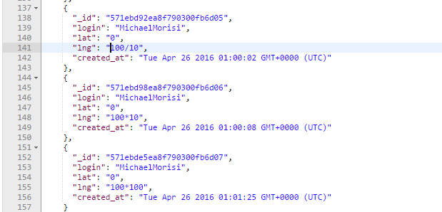

Assignment 4: Security
Introduction
The product in question that is being tested for bugs is a
web application which gets the user's location, adds it to a
running database of logins, and returns a series of landmarks
(also from a database) within 1 mile of the user's current
location. The specific page being tested is a simple index
page which prints out the username, coordinates, and time of
all the users' logins. In particular, this analysis will test for
the potential for HTML or script injection. The project being tested
was created by Brinley Macnamara.
Methodology
In testing Brinley's application, I used Postman to send simple
HTTP POST requests to inject HTML elements. I also elected to use
a text editor (Sublime) to examine her code to find possible
exploits. I used Google Chrome to view the results of my POST
requests on Brinley's application.
Abstract of Findings
Upon first cloning the Heroku repository, I immediately tried to
inject some simple HTML into Brinley's application (namely, an
image element). When examining the source code, I discovered that
Brinley had already secured her site against HTML injection. From
there, I tried to submit bad location values, including strings
and numbers outside of the normal latitude/longitude range,
but her application was protected against these cases as well. Next,
I attempted to insert faulty latitude/longitude values in the form of
arithmetic expressions, which indeed were passed through to the
server. Finally, I gave her code a full once-over to find any coding
practices that could affect the performance of her application.
Issues Found
- Issue 1: Can send potentially invalid arithmetic operations through post request
- Location:/sendLocation API in index.js
- Severity: Low. It's unlikely that this would be maliciously
exploited, but this could potentially pass in invalid
coordinates into the checkins database.
- Description: When POSTing location data to the server, it
is possible to insert arithmetic operations (+, -, *, /)
as valid numerical values. Unlike values normally outside the
standard lat/lng range, arithmetic expressions with normally
invalid results such as "100*100" can be inserted with no
error handling.
- Resolution: Adding an extra check when the lat and lng
are received to ensure that either there are no arithmetic
operators in the request, or computing the result of the
arithmetic operation and then deciding if the result is
invalid

- Issue 2: Potential for DDOS attacks
- Location:/sendLocation API in index.js
- Severity: Low to medium, depending on the exposure or
popularity of the site. If the site takes off, the potential
for DDOS attacks on the /sendLocation route are more likely
and are of a greater concern.
- Description: Essentially, if several users collude to flood
the checkins database on Mongo with /sendLocation POST
request, it's not unfeasible to think that the large number
of requests could flood the Mongo server and render site
functionality ineffective.
- Resolution: Several requests from the same coordinates in
quick succession by the same login could be filtered out.
Alternatively, if proxies are being used to rapidly shift
locations, there could be a hard cap on the number of requests
made per minute on the /sendLocation route.
- Issue 3: Enabling CORS with wildcard
- Location: index.js
- Severity: High. Since anyone can make a server request,
this is easily exploitable by malicious users.
- Description: When Brinley enables CORS on her server,
she uses the wildcard tag, indicating that all domains
can send requests to the server.
- Resolution: By only enabling CORS for known,
non-malicious domains, Brinley could filter out
requests from more harmful origins.
Conclusion
While there are a few flaws of low to medium consequence, overall,
Brinley's application is very effective in screening potential
HTML element and script injections, as well as preventing most kinds
of bad coordinate inputs. Most of her issues are either easy fixes or
issues that would only arise when scaling the app.